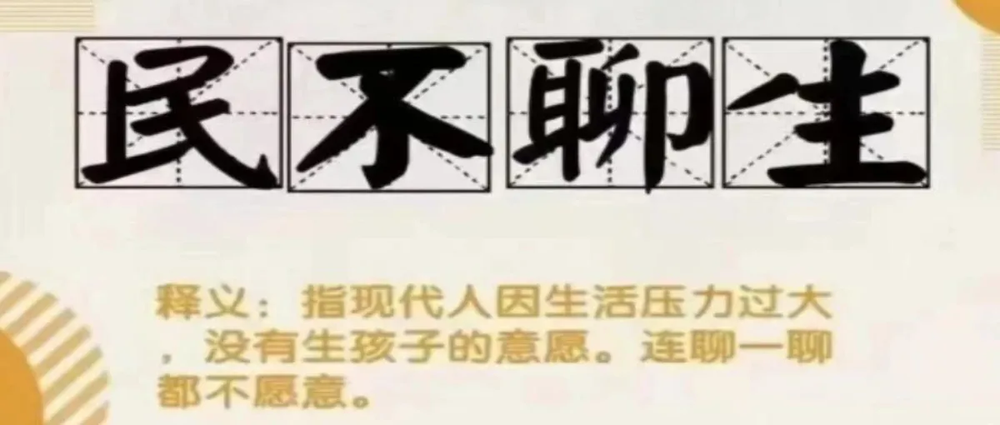
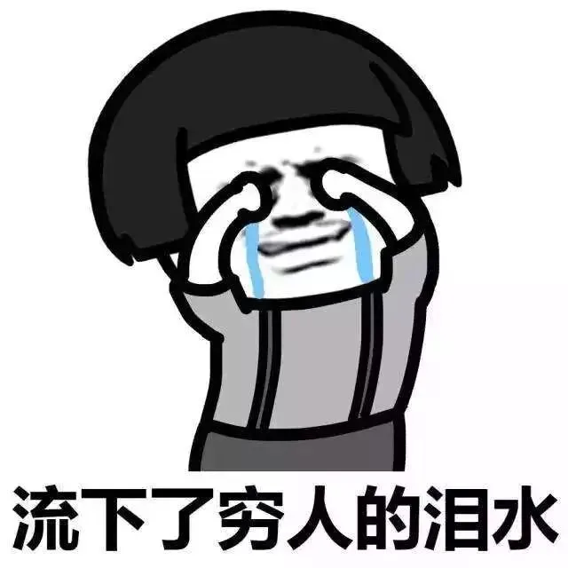
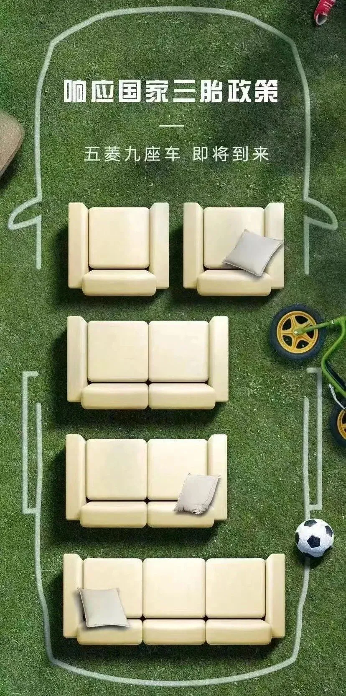
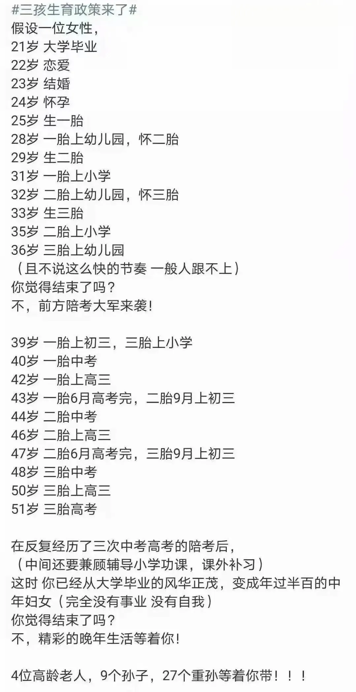

孖仔帮
公众号ID：twinsbang
关注
文|圆圈妈
网图|侵删
这篇无干货，纯吐槽，文末有投票。
1
三胎政策官宣的时候，我正在发愁给圆圈兄弟送什么儿童节礼物，正打算吃完晚饭带他们去超市选玩具，这时看到朋友圈和社群都在说一个重磅消息：三孩生育政策来了。
虽然三胎政策早就有风声，但这次是正式落实，还选在国际六一儿童节的前夕官宣，嗬！真是平地一声雷啊！
万万没想到国家给孩子们的六一节礼物竟然是弟弟妹妹？！
我决定，还是不要去买礼物了，国家给的这份礼物已经够呛的了。
我想起前段时间，我和圈圈的一番对话，也是关于三胎的。
圈圈问：“妈妈，你为什么不生个女孩子，要生男孩子？而且还是两个男孩子。
我答：生男孩还是女孩子不是妈妈说了算的。
圈圈问：那谁说了算？
我答：得找爸爸商量一下先。
圈圈问：那你们能生一个女孩子吗?
我无语....
我反问：你是想要妈妈生一个妹妹了吧？
圈圈答：是啊，我们家都没有女孩子的小宝宝，只有我和圆圆。
我无语....
我反问：哦，好吧，那如果还是个男孩子的宝宝呢？可以吗？
圈圈：也可以吧！
我再问：他可能会跟你抢玩具哦，会哭哦，还要吗？
圈圈答：要啊，我可以把玩具给他玩，给他喝牛奶啊。
我无语....
我好想告诉他，再来一个弟弟或妹妹，可不是喂奶买玩具那么简单啊。
我还想告诉他，为了养活他们哥俩，我，87年的妹子还没油腻就已经衰老了。
可是说了，他能懂个啥子？
早在3年前，圆圈兄弟才刚上幼儿园，身边就有不少人问我，还生吗？
就连路过的大妈也很关心我：“哎呦喂，双胞胎儿子啊，好幸福啊，要是再来一个妹妹就更好了！”
每次我都是眼神呆滞，脸上苦笑，心里憋屈，头上一片乌鸦飞过，好想在额头上贴个标签【此人很穷，莫问三孩】
须知道，有些人，光是活着就已经竭尽全力了，还要抚养一对双胞胎。
这6年来，圆圈就这样呲溜哧溜地长大了，每一天看似风平浪静，实际风起云涌，潮起潮落，养两个娃早已耗尽了我大半辈子的修为。
想想每个周末去香港背奶粉的日子，还有那贡献给港铁的运费路费；想想一年5880片+尿不湿的消耗量；再看看购物车的宝贝永远都是满的...
这好不容易把两部碎钞机扔进了幼儿园，正想为逃出深坑庆祝下，这会儿又得往另外一个更大的坑里跳....臣妾不疯啊！
我以为我真的要封肚了，结扎都预约好了，却因为爸爸一次生病住院动摇了。
爸爸住院期间，全程都是3个女儿+3个女婿忙前忙后，他的亲生儿子仅仅过来看了一眼，就跑了。
我大彻大悟，看来儿子真的不可靠，我这还是两个儿子，若全跑了，恐怕挂了都没人来领，还是得有个女儿保障一点。
我和妈妈说了下我的想法，已经生过4胎，被儿子伤透心的她，意味深长地看着我，坚定地说：“生吧！女儿还是靠谱点！”
后面看见身边的同事朋友，都突然消失在朋友圈了，这一打听原来都在忙着照顾二胎。
我感觉被她们抛弃了。
而且，圆圈上幼儿园之后，有段时间特别母慈子孝，岁月静好，我这空窗期，竟然闲着有点发慌，好像有点犹豫了。
于是，我自作主张地鼓励自己，看政策吧。
好啦，这不，政策来了！
讲真，我对三孩生育政策的官宣，真是期待已久，刚听到时内心就澎湃不已。
2
晚上，等圆圈睡了后，我和圆圈爸，针对三胎政策，展开一场高峰会谈....
我问：看新闻了吗？
圆圈爸答：嗯。
我问：怎样？再搞一个？
圆圈爸答：一个啊？那要是再来一对怎么办，我意思是，还是一对儿砸！
我：...
我就不明白了，像圆圈爸这种5元彩票都没中过的人，怎么好意思去担心再来一对双儿，到底是谁给他的底气！？他到底知不知道再来一对双胞胎的概率有多么Tiny！
如果不清楚，可以谷歌一下，
「一胎双胞胎，下一胎再生双胞胎的概率有多大？」
自然受孕的情况下，生两对双胞胎的概率约千分之三。
千分之三是个什么概念呢？
相当于，在一个电闪雷鸣，风雨交加的夜晚，在大马路上散步，被雷劈中了！
好吧，不想要就直说嘛，绕那么大个弯！
我知道的，如果有的选，估计圆圈爸情愿被雷劈，也没有勇气生三孩。
因为他不敢生老三的理由很现实！
#负担重#
他有2老要养，婆婆隔两天就要透析一次，还有2套房要供，2个儿子要养，还有1个全职在家带娃的老婆。
对，说的就是我！
我也有2老要养，爸爸每天都要吃靶向药，4姐弟均摊下来，也是笔不小的开支；我没有固定工作，偶尔码字赚点生活费，晚餐吃荤还是吃素完全看公号粉丝的心情。
#没人带#
若是要三孩，那这个艰巨的任务就是我来扛，我要管生，管养，管带，管教...全程一条龙，单打独斗，服务到底。
再直白点就是，我，一个女人要活成千军万马！
因为公婆年纪大身体不好，肯定是爱莫能助，圆圈爸现在的工作也没有以前自由，那么打头阵只能是我，是我，是我。
港真，让我独自去照顾一个小婴儿，我真的没信心。虽说有6年当妈的经验，但我不得不承认，我是滥竽充数过来的，育儿经验其实很有限。
圆圈刚出生就有公婆帮忙带，一直到圆圈2岁后，我和圆圈爸才开始两人一起带娃，但很多时候，都是圆圈爸在带娃，而我在码字或者做自己的事情。
此处不得不感慨，有我这样不靠谱的妈在，圆圈兄弟何其幸运啊！
此处不得不打下脸，就我这能耐还敢生老三，这到底是在侮辱谁呀？
#伤不起#
哦，差点忘了，我还有一对未成年，准备上小学的双胞胎儿子。
这意味着，我忙完小婴儿的屎尿屁，还得接着应付老大老二那永远做不完的功课作业，还有数不尽的课外补习，还有各种兴趣班培训班...
也许运气不好，还要同时搞三个娃？
那场面就是，左手屎尿屁，右手语数外。
一胎来双胞胎时，我就特么很无奈这种超本能的带娃行为，人只有一颗心脏，一双手，硬生生地被两个娃逼成了三心两意，三头六臂。
我对圆圈的关爱一直都不够，我已经很愧疚没办法给到他们100%的母爱，还指望着来日方长，往后余生，多一点陪伴，这要是再来一个老三跟他们抢妈妈？
我想，我即便是有9条命都不够花！
#养不起#
还有，这也是最重要的理由，我们在一线大城市的深圳，房价贵，消费高，小孩剪个头发就要38元起步，一件小婴儿的和尚服都要上百元....
若是要三孩，7座车不够用，得换个更大的车，阿尔法还是五菱荣光？我想只能是后者，听说这9座车已经有概念了，如图所示↓
现有的小二房不够住，得换小四房，这是个终极大BOSS！天知道，在全国房价最贵的深圳，拖家带口地换房是件多么恐怖的事情。
便宜的老破小看不上，高大上的买不起，最后伫立在风中凌乱的还是自己。
这样一细想，才发现自己有多么自欺欺人，根本就不是因为政策限制，而是“养不起”。
我和圆圈爸的深夜会谈最终不了了之，握个手，相视一笑，彼此心照不宣：我们都想生，但是不敢生，没有条件生！
我们都深深地明白：养育一对双胞胎是狂风暴雨，再来一个老三，那就是狂风暴雨+泥石流，而我们要想保命，那就趁早结扎，断了三胎的念想。
3
昨天看到群里有妈妈分享了一张图，特别扎心！除了养不起，更多的是伤不起。
如果真如图所示，一个女人光是围绕孩子去收割一生的韭菜，我感觉到，身为女性而悲哀！
然而，作为一家之主的男人，上有4老，下有3小，担起整个家，又谈何容易呢！？
这是个大环境，这是个时代，尔等小老百姓无可奈何，除了能看政策文件，其他的就是洗洗睡。
可是...
即便这么多赤裸裸的现实摆在我眼前，我依然意难平，这几天看见软糯糯的小女娃，我就想过去抱抱，看着她笑，心就会融化...
阴功，这到底是什么梗啊？！
我想我大概是得了繁殖癌，受三胎政策的刺激，开始出现并发症了。
最后，想听听大家对这个三胎政策的想法，希望能从中找到解药，早日回头是岸，于是发起了这个投票，欢迎一胎生了双胞胎的妈妈踊跃参与。
备注：二胎来了双胞胎的妈妈请不要投票，除非...你心疼国家了。
-END-
今日互动话题
#一胎来了双胞胎的妈妈们，你们还生吗？#
评论区聊一聊呗！
微信公众号：孖仔帮
ID : twinsbang
专注双胞胎孕育，养育，教育经验分享
扫码关注我们
点一下你会更好看耶




